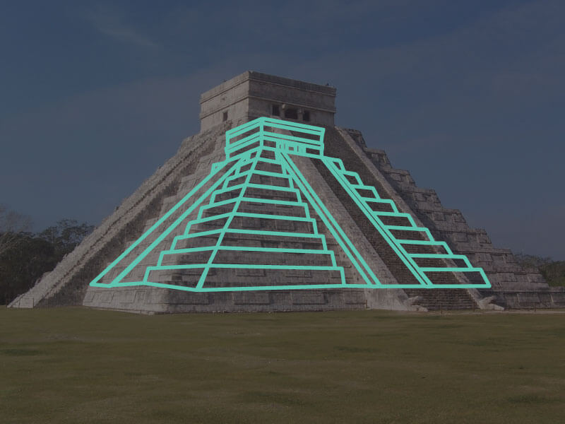

Chichen Itza
Chichen Itza was a large pre-Columbian city built by the Maya people of the Terminal Classic period. The archaeological site is located in Tinúm Municipality, Yucatán State, Mexico.
Chichen Itza was one of the largest Maya cities and it was likely to have been one of the mythical great cities, or Tollans, referred to in later Mesoamerican literature. The city may have had the most diverse population in the Maya world, a factor that could have contributed to the variety of architectural styles at the site.
Chichen Itza is one of the most visited archaeological sites in Mexico; an estimated 1.4 million tourists visit the ruins every year.
In 1988, Chichen Itza was designated a UNESCO World Heritage Site.